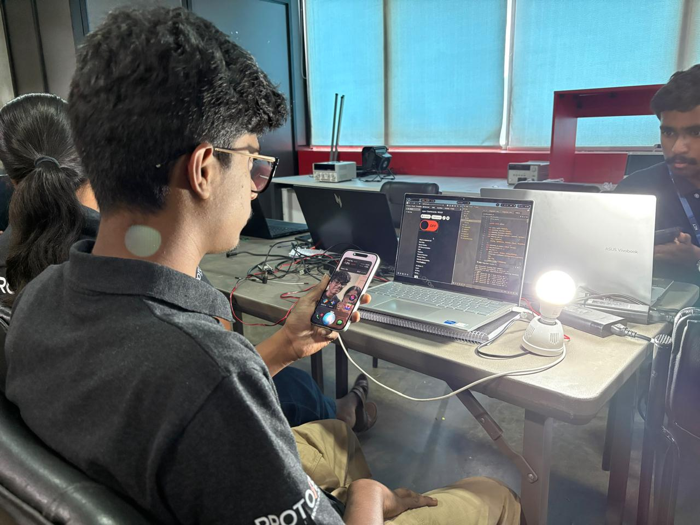
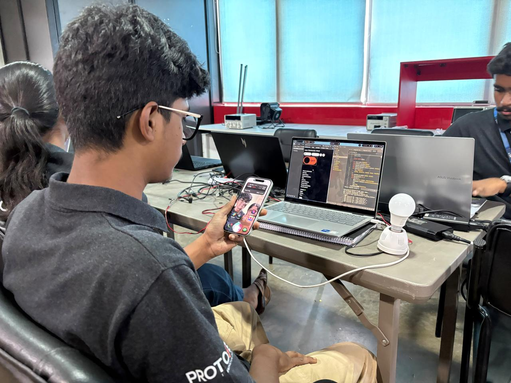
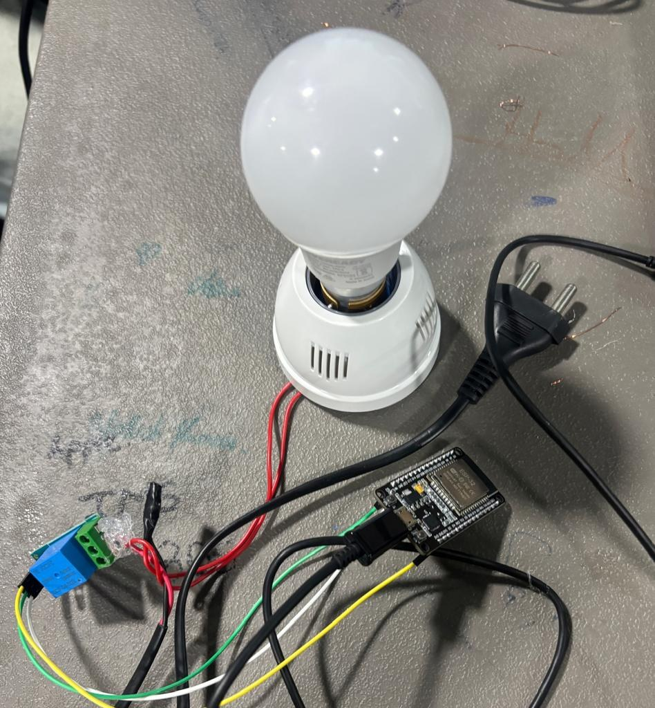

1Overview
In Task 2, the ESP32-C3 transitions from a local web server to a cloud-connected Internet of Things appliance. The objective is to control high-voltage AC mains lighting (or any electrical appliance) through an Adafruit IO cloud dashboard from anywhere in the world using the MQTT (Message Queuing Telemetry Transport) protocol.
Instead of relying on heavy C++ Arduino libraries, this solution implements a lightweight, bare-metal asynchronous MQTT 3.1.1 packet encoder and parser in Rust running directly on top of embassy-net TCP sockets.
2Concepts
Publish / Subscribe Model: In MQTT, clients do not speak directly to one another. Instead, both the cloud dashboard and the ESP32 connect to a central broker (io.adafruit.com:1883). The ESP32 subscribes to the feed topic <username>/feeds/bulb. When the user flips a switch on the Adafruit IO dashboard, the broker publishes an updated message (ON or OFF), which is dispatched to the ESP32 in milliseconds.
Embedded MQTT 3.1.1 Implementation: The firmware builds and writes raw MQTT control packets directly over TCP:
CONNECT(0x10): Initiates session with clean session flag, username, and Adafruit IO authentication key.SUBSCRIBE(0x82): Registers interest in the bulb feed with QoS 0.PINGREQ(0xC0, 0x00): Heartbeat keep-alive sent periodically to keep the cloud firewall and broker session alive.
Active-LOW Relay Isolation: Most optocoupled relay modules trigger when their input pin is pulled to logic LOW (0V). The relay physically breaks or completes the 230V AC Live wire, isolating high-voltage mains from the 3.3V digital logic of the microcontroller.
3Architecture & Data Flow
4Hardware & Software
| Hardware Component | Software & Cloud Services |
|---|---|
| ESP32-C3 RISC-V Microcontroller | Rust riscv32imc-unknown-none-elf toolchain |
| 1-Channel 5V/3.3V Optocoupled Relay | esp-hal, esp-rtos, esp-radio |
| AC Light Bulb, Socket & Mains Cord | embassy-net (Async TCP Stack) |
| Breadboard & Jumper Wires | Adafruit IO (MQTT Broker & Web Dashboard) |
| USB-C Programming Cable | espflash cargo flash runner |
5Wiring / Setup
| ESP32-C3 Pin | Relay Pin | Mains Wiring |
|---|---|---|
GPIO 10 | IN (Signal) | — |
5V / VIN | VCC | — |
GND | GND | — |
| — | COM (Common) | AC Mains Live (Supply) |
| — | NO (Normally Open) | Light Bulb Live terminal |
6Implementation
src/bin/main.rs (Embedded Rust MQTT Client) view on GitHub
#![no_std]
#![no_main]
extern crate alloc;
use core::cell::RefCell;
use critical_section::Mutex;
use embassy_executor::Spawner;
use embassy_futures::select::{select, Either};
use embassy_net::{tcp::TcpSocket, Config, IpAddress, Runner, Stack, StackResources};
use embedded_io_async::{Read, Write};
use esp_backtrace as _;
use esp_hal::{
gpio::{Level, Output, OutputConfig},
interrupt::software::SoftwareInterruptControl,
rng::Rng,
timer::timg::TimerGroup,
};
use esp_radio::wifi::{sta::StationConfig, Config as WifiConfig, WifiController};
use static_cell::StaticCell;
esp_bootloader_esp_idf::esp_app_desc!();
// Wi-Fi Credentials
const WIFI_SSID: &str = "YOUR_WIFI_SSID";
const WIFI_PASS: &str = "YOUR_WIFI_PASSWORD";
// Adafruit IO Credentials
const AIO_USERNAME: &str = "YOUR_AIO_USERNAME";
const AIO_KEY: &str = "aio_YOUR_ADAFRUIT_IO_KEY_HERE";
const AIO_FEED_KEY: &str = "bulb";
const AIO_IP: [u8; 4] = [52, 4, 253, 177]; // io.adafruit.com IPv4
const AIO_PORT: u16 = 1883;
const MQTT_KEEP_ALIVE_SECS: u16 = 60;
const MQTT_PING_INTERVAL_SECS: u64 = 45;
static RELAY: Mutex>>> = Mutex::new(RefCell::new(None));
fn set_relay(on: bool) {
critical_section::with(|cs| {
if let Some(ref mut pin) = *RELAY.borrow_ref_mut(cs) {
if on {
pin.set_low(); // Active-LOW: LOW energizes relay coil (Bulb ON)
} else {
pin.set_high(); // HIGH de-energizes relay coil (Bulb OFF)
}
}
});
}
fn encode_remaining_length(mut len: usize, out: &mut alloc::vec::Vec) {
loop {
let mut encoded_byte = (len % 128) as u8;
len /= 128;
if len > 0 {
encoded_byte |= 128;
}
out.push(encoded_byte);
if len == 0 {
break;
}
}
}
#[embassy_executor::task]
async fn adafruit_task(stack: Stack<'static>) {
let mut rx_buf = [0u8; 1024];
let mut tx_buf = [0u8; 1024];
loop {
let mut socket = TcpSocket::new(stack, &mut rx_buf, &mut tx_buf);
socket.set_timeout(Some(embassy_time::Duration::from_secs(90)));
let endpoint = (IpAddress::v4(AIO_IP[0], AIO_IP[1], AIO_IP[2], AIO_IP[3]), AIO_PORT);
if socket.connect(endpoint).await.is_ok() {
// 1. Send MQTT CONNECT Packet
let client_id = "xiao_esp32c3";
let mut var_header = alloc::vec::Vec::new();
var_header.extend_from_slice(&(4u16).to_be_bytes()); // "MQTT" length
var_header.extend_from_slice(b"MQTT");
var_header.push(4u8); // MQTT 3.1.1
var_header.push(0xC2u8); // CleanSession + Username + Password flags
var_header.extend_from_slice(&MQTT_KEEP_ALIVE_SECS.to_be_bytes());
var_header.extend_from_slice(&(client_id.len() as u16).to_be_bytes());
var_header.extend_from_slice(client_id.as_bytes());
var_header.extend_from_slice(&(AIO_USERNAME.len() as u16).to_be_bytes());
var_header.extend_from_slice(AIO_USERNAME.as_bytes());
var_header.extend_from_slice(&(AIO_KEY.len() as u16).to_be_bytes());
var_header.extend_from_slice(AIO_KEY.as_bytes());
let mut connect_pkt = alloc::vec::Vec::new();
connect_pkt.push(0x10); // CONNECT packet type
encode_remaining_length(var_header.len(), &mut connect_pkt);
connect_pkt.extend_from_slice(&var_header);
let _ = socket.write_all(&connect_pkt).await;
let _ = socket.flush().await;
let mut connack = [0u8; 4];
if socket.read_exact(&mut connack).await.is_err() || connack[0] != 0x20 || connack[3] != 0x00 {
socket.close();
embassy_time::Timer::after_secs(3).await;
continue;
}
// 2. Subscribe to Adafruit IO Feed
let topic = alloc::format!("{}/feeds/{}", AIO_USERNAME, AIO_FEED_KEY);
let mut sub_payload = alloc::vec::Vec::new();
sub_payload.extend_from_slice(&1u16.to_be_bytes()); // Packet ID
sub_payload.extend_from_slice(&(topic.len() as u16).to_be_bytes());
sub_payload.extend_from_slice(topic.as_bytes());
sub_payload.push(0x00); // QoS 0
let mut sub_pkt = alloc::vec::Vec::new();
sub_pkt.push(0x82); // SUBSCRIBE
encode_remaining_length(sub_payload.len(), &mut sub_pkt);
sub_pkt.extend_from_slice(&sub_payload);
let _ = socket.write_all(&sub_pkt).await;
let _ = socket.flush().await;
// 3. Receive Messages & Periodically Send PINGREQ
const PINGREQ: [u8; 2] = [0xC0, 0x00];
let mut rx_stream = [0u8; 512];
let mut ping_ticker = embassy_time::Ticker::every(
embassy_time::Duration::from_secs(MQTT_PING_INTERVAL_SECS),
);
'session: loop {
match select(socket.read(&mut rx_stream), ping_ticker.next()).await {
Either::First(Ok(0)) => break 'session,
Either::First(Ok(n)) => {
let msg = core::str::from_utf8(&rx_stream[..n]).unwrap_or("");
if msg.contains("ON") {
set_relay(true);
} else if msg.contains("OFF") {
set_relay(false);
}
}
Either::First(Err(_)) => break 'session,
Either::Second(_) => {
if socket.write_all(&PINGREQ).await.is_err() || socket.flush().await.is_err() {
break 'session;
}
}
}
}
socket.close();
}
embassy_time::Timer::after_secs(3).await;
}
}
#[esp_rtos::main]
async fn main(spawner: Spawner) {
esp_alloc::heap_allocator!(size: 72 * 1024);
esp_alloc::heap_allocator!(#[ram(reclaimed)] size: 48 * 1024);
let peripherals = esp_hal::init(esp_hal::Config::default());
let timg0 = TimerGroup::new(peripherals.TIMG0);
let sw_int = SoftwareInterruptControl::new(peripherals.SW_INTERRUPT);
esp_rtos::start(timg0.timer0, sw_int.software_interrupt0);
// Initial State: Relay OFF (Active-LOW means Level::High is OFF)
let relay_pin = Output::new(peripherals.GPIO10, Level::High, OutputConfig::default());
critical_section::with(|cs| {
*RELAY.borrow_ref_mut(cs) = Some(relay_pin);
});
let (wifi_controller, interfaces) =
esp_radio::wifi::new(peripherals.WIFI, Default::default()).expect("wifi init");
static STACK_RESOURCES: StaticCell> = StaticCell::new();
let resources = STACK_RESOURCES.init(StackResources::new());
let rng = Rng::new();
let seed = (rng.random() as u64) << 32 | rng.random() as u64;
static STACK: StaticCell> = StaticCell::new();
let (stack, runner) = embassy_net::new(
interfaces.station,
Config::dhcpv4(Default::default()),
resources,
seed,
);
let stack = STACK.init(stack);
spawner.spawn(connection_task(wifi_controller).expect("spawn connection"));
spawner.spawn(net_task(runner).expect("spawn net"));
loop {
if let Some(_) = stack.config_v4() { break; }
embassy_time::Timer::after_millis(500).await;
}
spawner.spawn(adafruit_task(*stack).expect("spawn adafruit task"));
} 7Configuration
- Create an account at Adafruit IO.
- Under Feeds, create a feed named
bulb. - Under Dashboards, create a new dashboard and add a Toggle Block connected to
bulb(set ON value =ON, OFF value =OFF). - Obtain your Adafruit IO Username and Active Key from the "My Key" button.
- Enter your credentials into
src/bin/main.rsand flash the firmware:cargo run --release.
8Evidence



9Challenges & Fixes
Problem: Adafruit IO broker closed TCP connection exactly every 90 seconds.
Why: MQTT brokers enforce a keep-alive timeout (1.5 × keep_alive parameter). Without heartbeats, idle connections are dropped.
Fix: Implemented Embassy's select() future multiplexing a 45-second Ticker with incoming socket reads. When the ticker fires, the MCU transmits a 2-byte PINGREQ ([0xC0, 0x00]), maintaining 24/7 persistent connectivity.
Problem: Relay inverted behavior (bulb turned ON when pressing OFF).
Why: Cheap 1-channel relay modules use optocouplers with active-LOW transistor biasing.
Fix: Handled inside set_relay(): pin.set_low() for ON, and pin.set_high() for OFF. Default state on boot initialized to Level::High to prevent brief bulb flicker on startup.
10Reflection
Implementing MQTT directly in Rust without external C libraries was eye-opening. Rather than adding megabytes of opaque dependency code, MQTT 3.1.1 is straightforward when decomposed into binary packets. Rust's strict typing and enum guarantees made variable-length header encoding and packet parsing completely deterministic.
11Repository Link
Complete source code and build instructions: https://github.com/Udhayan27-Dev/IoT_Task1/tree/main/task2-adafruit-mqtt
✓Checklist Coverage
| Guide Requirement | Location |
|---|---|
| Objective & problem addressed | 1. Overview |
| MQTT publish/subscribe architecture | 2. Concepts |
| End-to-end cloud data flow diagram | 3. Architecture |
| Hardware & toolchain inventory | 4. Hardware & Software |
| Mains wiring & relay schematic | 5. Wiring / Setup |
| Full Embedded Rust source code | 6. Implementation |
| Adafruit IO dashboard setup | 7. Configuration |
| ON/OFF photographs & rig evidence | 8. Evidence |
| Keep-alive & active-low relay fixes | 9. Challenges & Fixes |
| Technical reflection | 10. Reflection |
| GitHub repository link | 11. Repository Link |